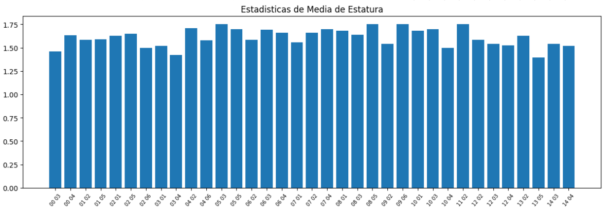
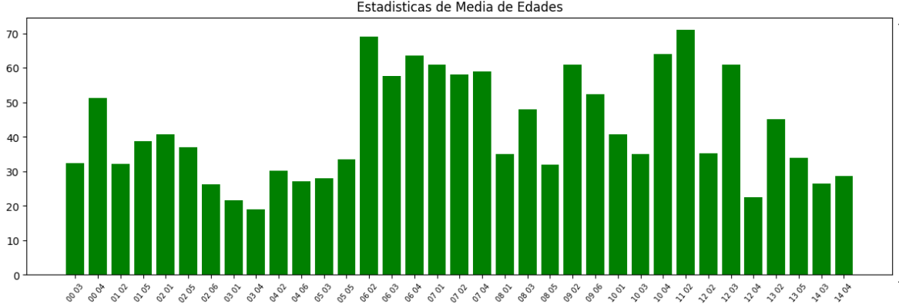
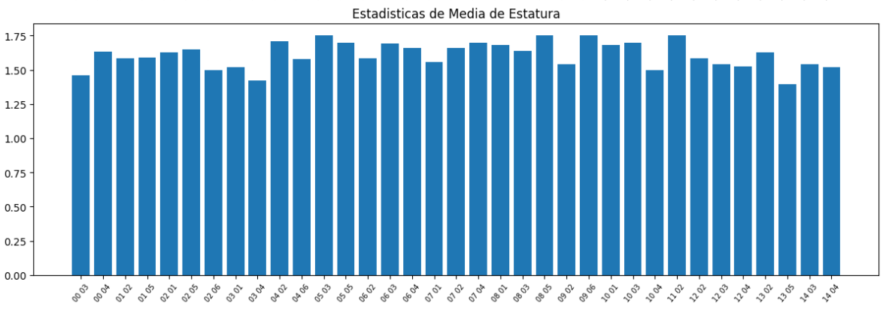
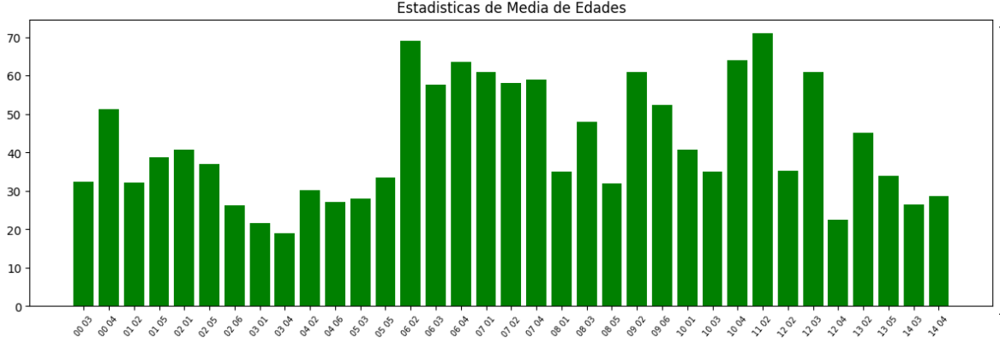

Este proyecto surge con la idea de analizar y concientizar sobre la salud en la comunidad José Maria vargas.
Entrevistamos a familias del area, recopilando datos sobre su peso y altura para calcular su Índice de
Masa Corporal (IMC).
Con la ayuda de herramientas tecnológicas como Python y la biblioteca pandas, procesamos estos datos para
generar estadísticas que revelan
el estado de salud general de la población.


 


